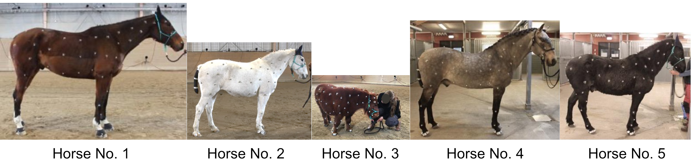

Studies of quadruped animal motion help us to identify diseases, understand behavior and unravel the mechanics behind gaits in animals. The horse is likely the best-studied animal in this aspect, but data capture is challenging and time-consuming. Computer vision techniques improve animal motion extraction, but the development relies on reference datasets, which are scarce, not open-access and often provide data from only a few anatomical landmarks. Addressing this data gap, we introduce PFERD, a video and 3D marker motion dataset from horses using a full-body set-up of densely placed over 100 skin-attached markers and synchronized videos from ten camera angles. Five horses of diverse conformations provide data for various motions from basic poses (eg. walking, trotting) to advanced motions (eg. rearing, kicking). We further express the 3D motions with current techniques and a 3D parameterized model, the hSMAL model, establishing a baseline for 3D horse markerless motion capture. PFERD enables advanced biomechanical studies and provides a resource of ground truth data for the methodological development of markerless motion capture.
Recording scenario with 56 mocap cameras and ten color cameras using Qualisys system. The system recognizes the markers and the orange lines are connections between the markers.
Five horses with over 100 skin-attached motion capture markers were used in the study.

@article{li2024poses,
title={The Poses for Equine Research Dataset (PFERD)},
author={Li, Ci and Mellbin, Ylva and Krogager, Johanna and Polikovsky, Senya and Holmberg, Martin and Ghorbani, Nima and Black, Michael J and Kjellstr{\"o}m, Hedvig and Zuffi, Silvia and Hernlund, Elin},
journal={Scientific Data},
volume={11},
number={1},
pages={497},
year={2024},
publisher={Nature Publishing Group UK London}
}